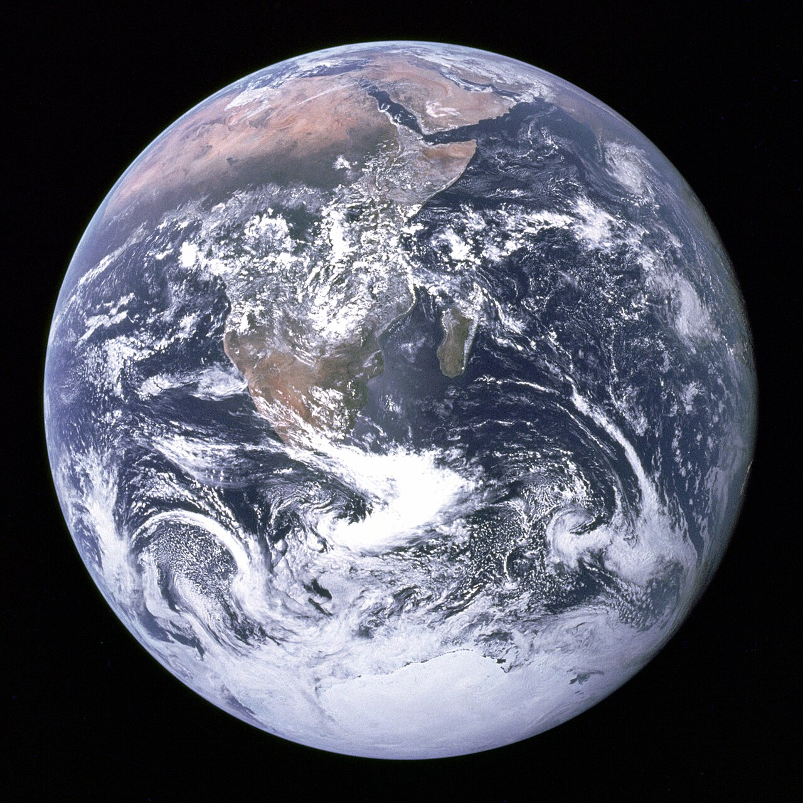
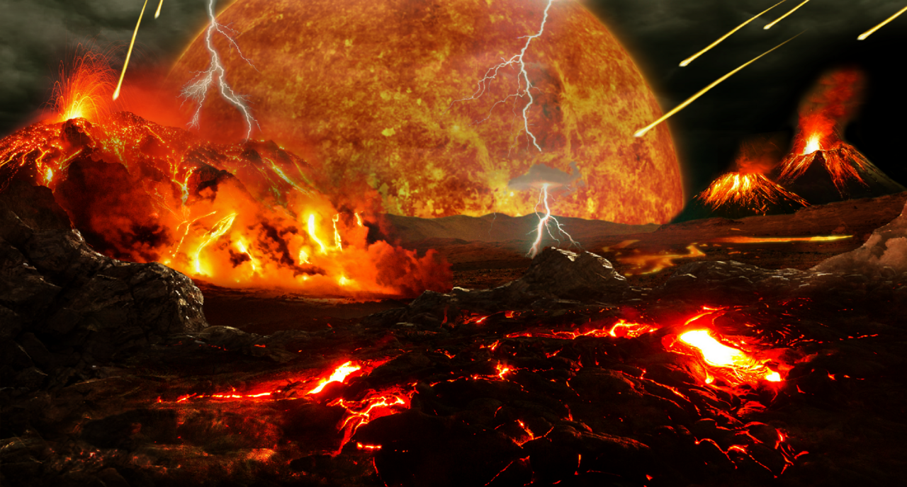
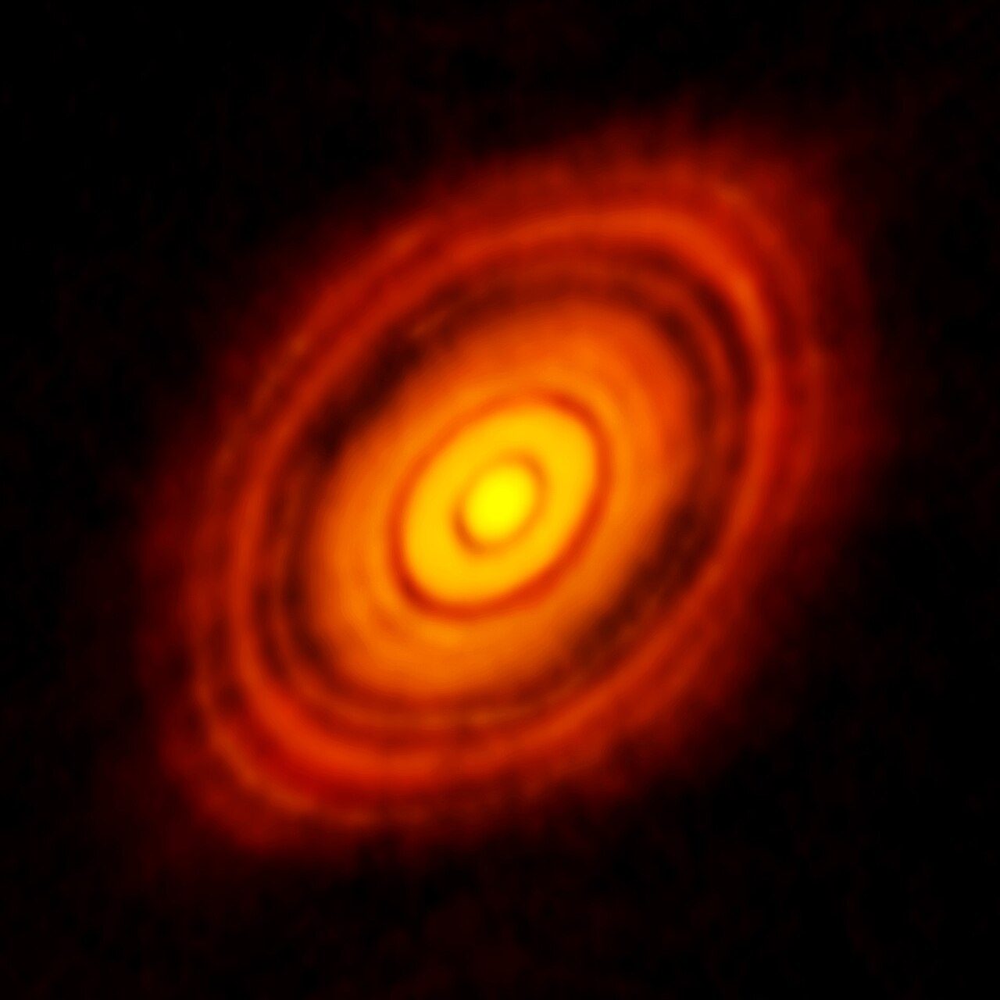
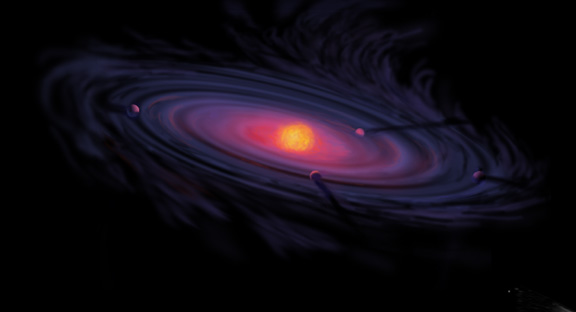
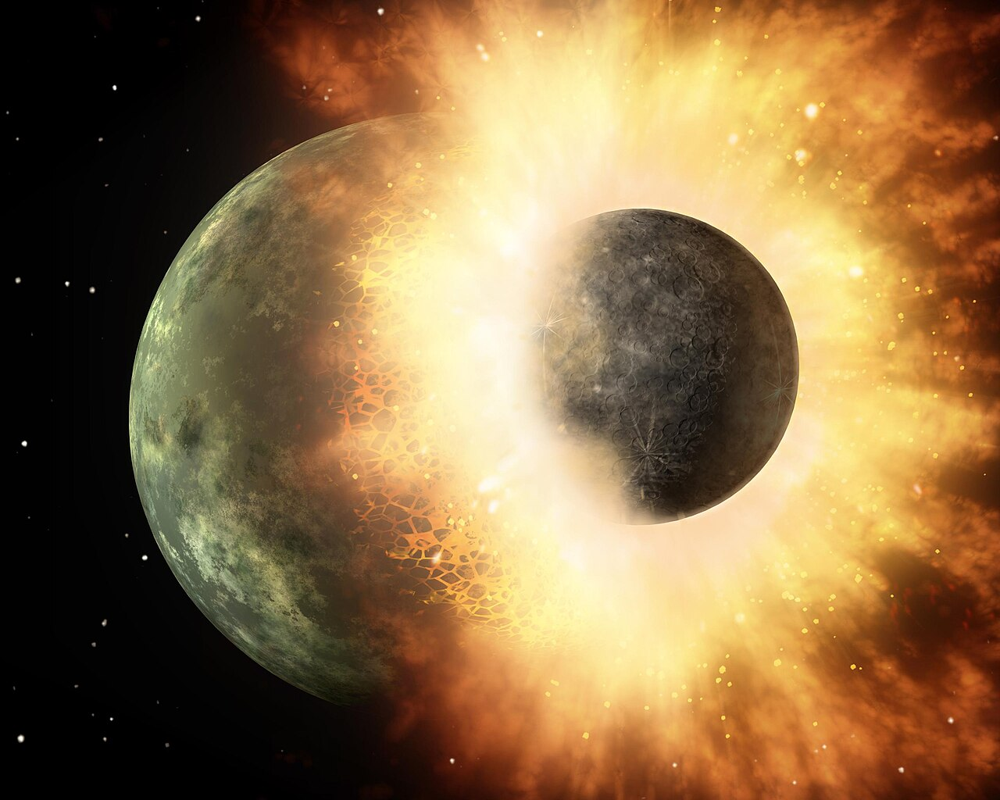
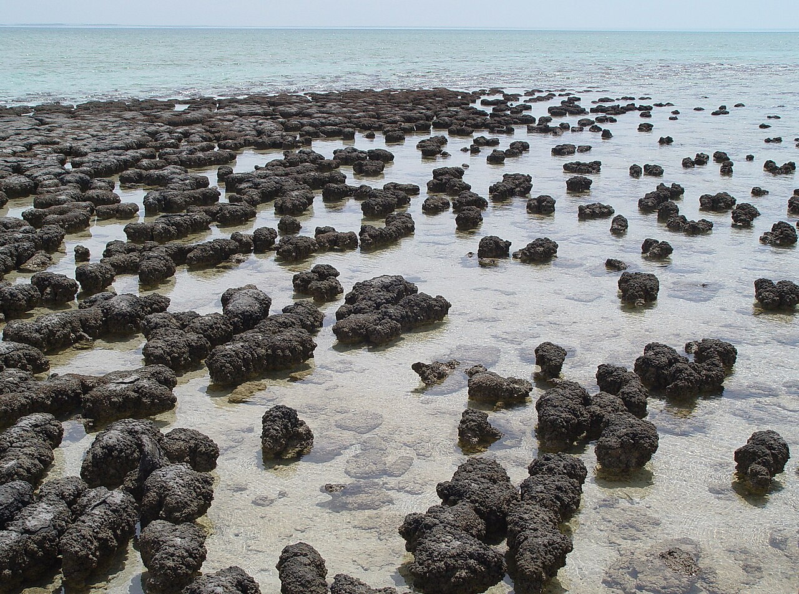
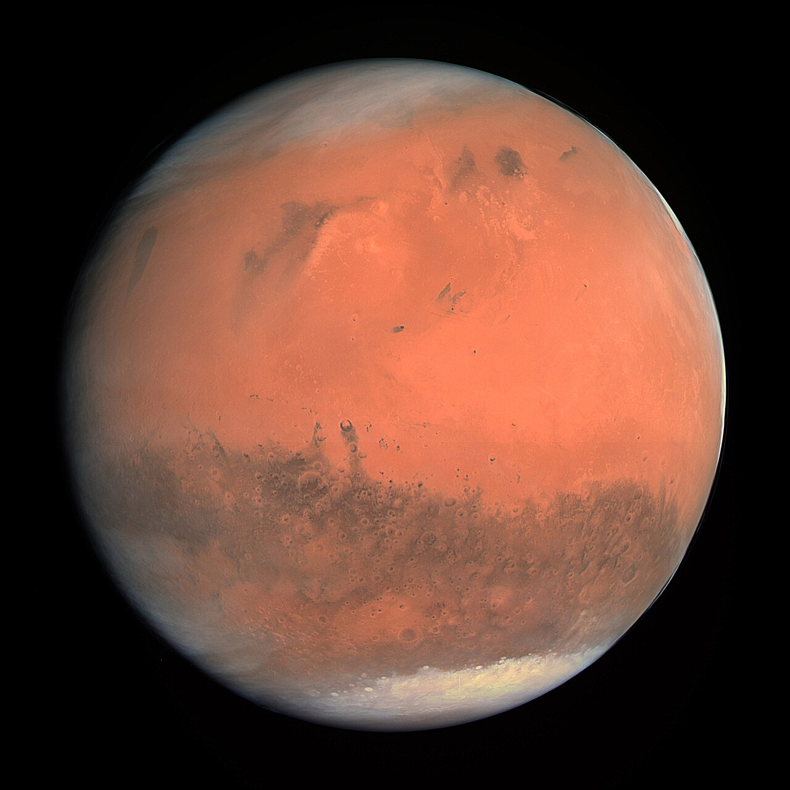

푸른 지구는 언제, 어떻게 만들어졌을까?
교과서 p. 10학습 목표
- 태양계 성운에서 태양계가 만들어지는 물리적 과정을 설명할 수 있다.
- 지구가 탄생한 뒤 지권·기권·수권·생물권이 형성된 과정을 추론할 수 있다.


Q1. 처음 지구에도 바다가 있었을까?
Q2. 처음 지구의 공기에도 산소가 있었을까?
Q3. 무거운 철은 왜 지구 중심에 모여 있을까?
지구 사진을 보고 느낌을 자유롭게 말하게 한 뒤, 세 질문에 '예/아니요'로 예측하게 합니다. 수업 마지막에 다시 확인하면 개념 변화를 볼 수 있습니다. 교과서 운영안은 3차시입니다. 1차시는 태양계의 형성, 2차시는 지구의 진화, 3차시는 탐구와 형성 평가입니다.
2차시(100분) 수업 운영안
| 차시 | 단계 | 시간 | 활동 |
|---|---|---|---|
| 1차시 | 동기 유발 | 5분 | 지구 사진 두 장 비교, Q1~Q3 예측 기록 |
| 핵심 개념 1 | 25분 | 성운설의 흐름 설명 → 시뮬레이션 1(성운 수축) → 응축·집적·분화 용어 정리 | |
| 핵심 개념 1 심화 | 12분 | 시뮬레이션 2(설선) · 태양계의 구성(카이퍼 벨트·오르트 구름) · 운석 연대 | |
| 정리 | 8분 | 개념 확인 O/X ①, 다음 차시 예고 | |
| 2차시 | 핵심 개념 2 | 15분 | 원시 지구의 열원 4가지 → 시뮬레이션 3(분화) → 원시 지각·지르콘 |
| 핵심 개념 3 | 15분 | 대기 성분별 운명 표 · 그래프 해석 연습 · 시뮬레이션 4 | |
| 탐구 활동 | 12분 | 금성·지구·화성 비교 토의, 결과 정리 | |
| 형성 평가 | 8분 | 문항 풀이와 동기 유발 예측 다시 보기 |
태양계의 형성
교과서 p. 10 ~ 11(1) 태양계 성운의 수축과 회전
- 출발: 태양계는 우리은하 나선팔에 있던, 수소·헬륨이 주성분인 거대한 성운에서 시작되었다.
- 수축의 시작: 약 50억 년 전 초신성 폭발의 충격으로 성운이 수축하여 태양계 성운이 만들어졌다.
- 회전과 가속: 태양계 성운은 자체 중력으로 수축하면서 회전하기 시작했고, 물질이 중심으로 모일수록 회전 속도가 빨라졌다.
- 원반 형성: 물질의 대부분은 수축이 강한 중심부에 모이고, 일부는 바깥쪽에 납작한 원반을 이루었다.
(2) 원시 태양의 형성
- 성운이 계속 수축하면서 중심부가 가열되었고, 주변의 기체와 먼지를 끌어들이며 밀도가 큰 원시 태양이 되었다.
- 중력 수축으로 중심부 온도가 계속 올라가 수소 핵융합 반응이 일어나는 온도에 이르자, 스스로 빛을 내는 태양이 되었다.


(3) 미행성체와 원시 행성의 형성
- 미행성체가 자라 지름이 약 1000 km 이상이 되면 자체 중력으로 둥근 모양을 유지할 수 있는데, 이를 원시 행성이라고 한다.
- 원시 지구도 원시 태양 가까운 원반 안쪽에서 금속·규산염 미행성체들이 충돌하고 뭉쳐져 만들어졌고, 공전하는 동안 주변 미행성체를 끌어당겨 점점 커졌다.


(4) 지구형 행성과 목성형 행성은 왜 다를까?
- 원반 안쪽 (태양과 가까움): 온도가 높아 가볍거나 휘발성 있는 성분은 대부분 날아가고, 철·니켈 같은 금속과 규산염처럼 무거운 성분만 미행성체가 되었다. → 암석으로 이루어지고 밀도가 크며 질량이 작은 지구형 행성
- 원반 바깥쪽 (태양에서 멂): 온도가 낮아 얼음 상태의 입자도 존재했다. 얼음과 암석 먼지가 합쳐져 미행성체가 되었고, 자라면서 주변 기체까지 끌어모았다. → 밀도가 작고 질량이 큰 목성형 행성
| 구분 | 지구형 행성 | 목성형 행성 |
|---|---|---|
| 위치 | 태양과 가까움 (수성·금성·지구·화성) | 태양에서 멂 (목성·토성·천왕성·해왕성) |
| 미행성체의 재료 | 금속 + 규산염 | 금속 + 규산염 + 얼음, 주변 기체 |
| 밀도 · 질량 | 밀도 큼 · 질량 작음 | 밀도 작음 · 질량 큼 |
자세히 알아보기 ① 성운설과 태양계 형성의 세 낱말 심화 정리
- 성운설의 출발: 18세기 철학자 칸트는 우주에 흩어진 기체와 먼지가 중력으로 모이며 회전하면, 가운데에는 별이, 둘레에는 행성이 생긴다고 생각했다. 지금도 태양계의 기원을 설명하는 가장 유력한 가설이 이 성운설이다.
- 재료는 어디서 왔을까? 우주가 탄생한 뒤 수많은 별이 생기고 죽기를 되풀이하며 내놓은 물질이 성운을 이루었다. 태양계 성운에는 수소·헬륨뿐 아니라 앞선 별들이 만든 무거운 원소도 섞여 있었다.
| 낱말 | 뜻 | 태양계 형성에서 일어난 일 |
|---|---|---|
| 응축 | 기체 상태의 물질이 식으면서 액체나 고체 알갱이로 바뀜 | 원반이 식으며 먼지·얼음 같은 고체 입자가 생김 |
| 집적 | 고체 알갱이들이 부딪치고 달라붙어 쌓임 | 고체 입자 → 미행성체 → 원시 행성으로 성장 |
| 분화 | 천체 안에서 밀도가 비슷한 물질끼리 모여 층을 이룸 | 녹은 원시 지구에서 핵·맨틀이 나뉨 |
자세히 알아보기 ② 오늘날 태양계의 모습 심화 정리
- 질량의 거의 전부는 태양: 태양계 전체 질량의 99.8% 이상이 태양에 몰려 있다. 나머지가 행성·위성·소행성·혜성 등에 나뉘어 있다.
- 한 원반에서 태어난 흔적: 행성과 소행성은 태양의 적도면과 거의 같은 평면에서 같은 방향으로 공전한다.
- 행성의 두 무리
- 지구형 행성(수성·금성·지구·화성): 반지름 작음, 밀도 큼, 암석·금속으로 된 단단한 표면
- 목성형 행성: 반지름 큼, 밀도 작음. 목성·토성은 수소·헬륨이 대부분인 거대 가스 행성, 천왕성·해왕성은 물·암모니아·메테인 성분이 많은 거대 얼음 행성
- 행성이 되지 못한 천체: 원시 행성으로 자라지 못한 미행성체들은 왜소 행성, 소행성, 혜성 등으로 남았다.
- 태양계의 바깥 경계: 해왕성 궤도 밖 약 30~50 AU에는 얼음 천체가 모인 카이퍼 벨트가, 그보다 훨씬 먼 수천~10만 AU에는 태양계를 공처럼 감싼 오르트 구름이 있다고 본다.
| 행성의 재료 | 성분 | 고체로 존재할 수 있던 곳 |
|---|---|---|
| 기체 | 수소, 헬륨 | 매우 낮은 온도에서만 응축 → 원반 대부분에서 기체 |
| 암석 | 규산염, 철·니켈 | 녹는점이 높아 원반 안쪽에서도 고체 |
| 얼음 | 물, 암모니아, 메테인, 이산화 탄소 | 온도가 낮은 원반 바깥쪽에서만 고체 |
개념 확인 ① O/X
지구의 진화 ① 마그마 바다에서 층상 구조로
교과서 p. 12(1) 원시 지구의 진화 과정
- 열의 공급: 원시 지구에는 미행성체가 계속 충돌했다. 미행성체의 충돌열과 지구 내부 방사성 동위 원소의 붕괴열로 온도가 올라가 대부분이 녹아 마그마 바다가 되었다.
- 핵과 맨틀의 분리: 녹은 상태에서 밀도가 큰 철·니켈은 중심으로 가라앉아 핵이 되고, 밀도가 작은 규산염 물질은 떠올라 맨틀이 되었다. → 지구 내부가 층상 구조를 이루게 됨
- 원시 지각의 형성: 미행성체 충돌이 줄어들자 표면이 서서히 식었고, 암석이 녹는 온도 아래로 내려가면서 맨틀 위에 얇은 원시 지각이 생겼다.
- 내부의 냉각: 내부도 점차 식어 맨틀은 고체가 되었고, 핵은 액체 상태의 외핵과 고체 상태의 내핵으로 나뉘었다.
- ① 미행성체 충돌미행성체가 계속 부딪치며 충돌열이 쌓인다. 오른쪽 온도계를 보자.
- ② 마그마 바다녹는 온도를 넘자 지구 대부분이 녹았다. 이제 물질이 움직일 수 있다.
- ③ 핵과 맨틀의 분리무거운 철·니켈은 가라앉아 핵, 가벼운 규산염은 떠올라 맨틀이 된다.
- ④ 냉각 → 원시 지각충돌이 줄어 표면이 식고 얇은 원시 지각이 생긴다. 핵은 외핵(액체)과 내핵(고체)으로 나뉜다.
분화의 결과: 오늘날 지구의 층상 구조
투명 병에 물과 식용유를 넣고 흔들어 세워 두는 시연을 시뮬레이션 3 직전에 하면 '분화' 개념이 바로 연결됩니다. 시뮬레이션에서는 '녹아야 분화된다'는 점을 꼭 짚어 주세요.
자세히 알아보기 ③ 원시 지구를 녹인 네 가지 열 심화 정리
| 열원 | 원리 |
|---|---|
| 미행성체의 충돌열 | 빠르게 떨어지던 미행성체의 운동 에너지가 충돌 순간 열로 바뀐다. |
| 방사성 동위 원소의 붕괴열 | 우라늄·토륨·칼륨 같은 원소가 붕괴할 때 줄어든 질량이 에너지(열)로 바뀐다. |
| 원시 대기의 온실 효과 | 수증기·이산화 탄소가 많은 두꺼운 원시 대기가 열이 빠져나가는 것을 막았다. |
| 중력 수축열 | 지구가 커지며 스스로의 무게로 압축될 때 위치 에너지가 열로 바뀐다. |
- 최초의 대기는 사라졌다: 갓 태어난 지구는 성운에서 끌어온 수소·헬륨을 두르고 있었지만, 중력이 약하고 태양풍이 강해 대부분 우주로 흩어졌다. 그 뒤 충돌과 화산 활동으로 나온 기체가 새 대기(원시 대기)를 이루었다.
- 분화는 '녹아야' 일어난다: 고체 상태에서는 물질이 거의 움직이지 못한다. 마그마 바다가 생겨 물질이 흐를 수 있게 되자 무거운 철·니켈이 가라앉고 가벼운 규산염이 떠올랐다.
- 층상 구조의 결과: 지구 중심으로 갈수록 밀도가 커진다(지각 약 2.7~3.0 → 맨틀 약 3.3~5.6 → 핵 약 10~13 g/cm³).
개념 확인 ② O/X
지구의 진화 ② 대기·바다·생명의 탄생
교과서 p. 13(1) 원시 대기와 원시 바다
- 원시 대기 (기권): 원시 지구에서 화산 활동이 활발하게 일어나 많은 화산 가스가 나와 원시 대기가 되었다. 주성분은 수증기와 이산화 탄소로 오늘날 대기와 크게 달랐고, 이 기체들의 온실 효과로 기온이 매우 높았다.
- 원시 바다 (수권): 지표가 충분히 식자 대기 중 수증기가 응결해 많은 비가 내렸고, 빗물이 낮은 곳에 모여 원시 바다가 되었다.
- 바닷물의 변화: 해저 화산에서 나온 염소·황, 육지에서 빗물과 강물에 녹아 운반된 나트륨·마그네슘·칼슘 등이 더해져 염분이 증가했다. 또 대기 중 이산화 탄소가 바닷물에 녹아 대기의 이산화 탄소 농도가 낮아졌다.
(2) 생명체의 출현과 산소의 증가
- 광합성 생물의 출현 (생물권): 약 35억 년 전 바다에 광합성을 하는 생명체(남세균)가 나타나 산소를 만들기 시작했다.
- 산소가 곧바로 쌓이지 못한 까닭: 처음 만들어진 산소는 바닷물에 녹아 있던 철과 결합해 산화철로 해저에 가라앉았다. 이것이 호상 철광층이다.
- 대기에 산소 축적: 약 25억 년 전부터 산소가 대기로 방출되어 기권에 쌓이기 시작했다.
- 오존층과 육상 생물: 대기 중 산소가 늘어 오존층이 만들어졌고, 오존층이 자외선을 흡수하면서 바다뿐 아니라 육지에서도 생물이 살 수 있게 되었다.


정리: 지구시스템의 네 권역은 이렇게 만들어졌다
| 권역 | 처음 모습 | 형성 과정 |
|---|---|---|
| 지권 | 원시 지각 | 마그마 바다 → 핵과 맨틀 분리 → 표면 냉각으로 원시 지각 형성 |
| 기권 | 원시 대기 | 화산 가스(수증기·이산화 탄소 등) 방출 |
| 수권 | 원시 바다 | 수증기 응결 → 비 → 낮은 곳에 모임 → 염분 증가, 이산화 탄소 용해 |
| 생물권 | 바다의 광합성 생물 | 산소 생성 → 대기에 산소 축적 → 오존층 형성 → 육상 진출 |
원시 지구가 탄생한 뒤 네 권역이 차례로 형성되었고, 지구는 각 권역이 활발하게 상호작용하는 역동적 행성으로 진화했다.
자세히 알아보기 ④ 대기 성분은 각각 어디서 와서 어디로 갔을까? 심화 정리
| 성분 | 어디서 왔나 | 어떻게 변했나 |
|---|---|---|
| 수증기 | 화산 가스의 주성분 | 지표가 식자 비가 되어 원시 바다를 이룸. 일부는 강한 자외선에 분해되어 가벼운 수소가 우주로 빠져나감 |
| 이산화 탄소 | 화산 가스 | 처음에는 분압이 매우 높았으나 원시 바다에 녹아 석회암 등으로 쌓이며 급격히 감소, 이후 생물 활동으로도 지권에 고정됨 |
| 산소 | 남세균의 광합성 (약 35억 년 전부터) | 처음엔 바닷물 속 철과 결합해 호상철광층이 됨 → 약 24억 년 전부터 대기에 쌓임 → 오존층 형성 |
| 질소 | 화산 가스, 암모니아의 분해 | 화학적으로 안정해 거의 반응하지 않고 오랜 세월 쌓여 지금 대기의 주성분이 됨 |
| 아르곤 | 지구 내부 방사성 동위 원소(칼륨)의 붕괴 → 화산으로 방출 | 거의 반응하지 않아 일정한 농도로 남아 있음 |
원시 대기
수증기·이산화 탄소가 대부분, 메테인·암모니아·질소 조금, 산소는 거의 없음
현재 대기
질소 약 78%, 산소 약 21%, 아르곤 약 0.9%, 이산화 탄소 약 0.04%, 수증기 0~4%
- 바다가 짜진 까닭: 해저 화산에서 나온 물질이 바닷물에 녹고, 육지 암석이 풍화되어 생긴 여러 이온이 강물에 실려 바다로 들어오면서 염류가 쌓여 염분이 점점 높아졌다.
개념 확인 ③ O/X
지구가 역동적 행성으로 진화한 까닭을 다른 고체 행성과 비교하기
교과서 p. 14 ~ 15탐구 · 금성, 지구, 화성의 진화 비교
목표 금성·화성의 진화 과정과 비교하여 지구가 역동적 행성으로 진화한 까닭을 추론할 수 있다.
준비물 스마트 기기


| 구분 | 금성 | 지구 | 화성 |
|---|---|---|---|
| 태양과의 거리 (지구 = 1) | 0.73 | 1 | 1.54 |
| 반지름 (지구 = 1) | 0.95 | 1 | 0.53 |
| 질량 (지구 = 1) | 0.81 | 1 | 0.11 |
| 대기압 (지구 = 1) | 95 | 1 | 0.01 |
| 주요 대기 성분 | 이산화 탄소 | 질소, 산소 | 이산화 탄소 |
| 평균 표면 온도 | 480 °C | 15 °C | −63 °C |
| 액체 상태의 물 | 없음 | 있음 | 거의 없음 |
과정
- 금성, 지구, 화성에 각각 어떤 권역이 존재하는지 조사한다.
- 행성의 진화 과정에서 태양과의 거리, 행성의 크기·질량, 대기 성분 등이 각 행성의 권역 형성에 어떤 영향을 주었는지 토의한다.
결과 및 정리
1. 금성, 지구, 화성에 존재하는 권역을 쓰고, 각 행성의 특징이 권역 형성에 어떤 영향을 주었는지 설명해 보자.
지구: 지권, 기권, 수권, 생물권 모두 존재한다.
화성: 지권. 질량이 작아 대기를 유지하기 어려웠고, 태양에서 멀고 대기가 희박해 물이 얼거나 증발해 사라졌다.
2. 지구가 역동적 행성으로 진화한 까닭을 금성, 화성과 비교하여 설명해 보자.
크기 → 지질 활동
큰 행성은 내부 온도가 오래 높게 유지된다. 지구와 금성은 지금도 지질 활동이 있지만, 작은 화성은 빨리 식어 지질 활동이 거의 없다.
질량 → 대기 유지
질량이 큰 지구와 금성은 화산 가스를 붙잡아 대기를 유지하지만, 화성은 대기가 매우 희박하다.
거리 → 액체 상태의 물
금성은 뜨거워 물이 증발했고, 이산화 탄소만 남아 강한 온실 효과가 생겼다. 화성은 추워 물이 얼거나 날아갔다.
생명체 → 대기 변화
지구에서는 광합성 생물이 이산화 탄소를 흡수하고 산소를 내놓아 다양한 생명체의 터전을 만들었다.
3. 더 생각하기 · 수성이 역동적 행성으로 진화하지 못한 까닭을 지구와 비교하여 설명해 보자.
탐구 표의 수치는 교과서 표(출처: 《지구의 이해》, 2018)와 같습니다. 토의가 막히면 오른쪽 '토의 힌트'의 세 가지 연결 고리를 제시하세요. 2번은 서술형 평가로 활용할 수 있습니다. 채점 기준 예시: 크기-지질 활동, 질량-대기, 거리-물, 생명체-대기 변화 각 1점, 권역 간 상호작용 언급 1점.
개념 확인 문제
전체 풀이로 쓸 때는 넓은 화면 모드에서 학생들이 손가락으로 번호를 든 뒤 클릭하면 됩니다. '다시 풀기'로 초기화할 수 있습니다.
그림 출처
사진은 모두 Wikimedia Commons의 퍼블릭 도메인 또는 CC 라이선스 자료이며, 각 그림 아래에 저작자와 라이선스를 표시했습니다. 모식도와 시뮬레이션은 이 수업 자료를 위해 직접 만들었습니다. 탐구 표의 수치는 교과서 표를 따랐습니다.